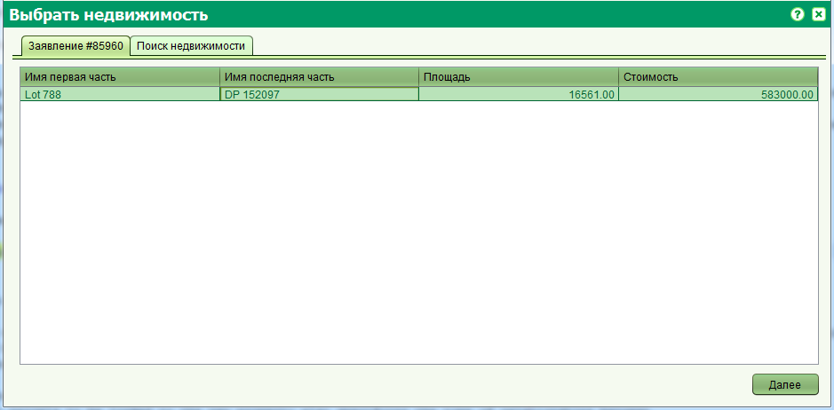
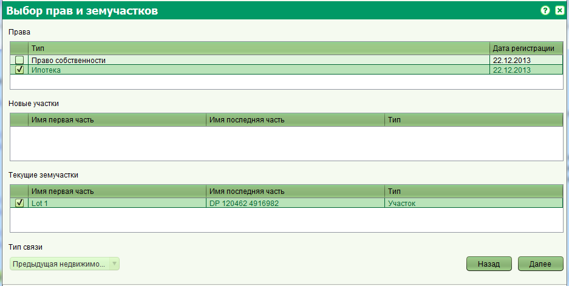

Добавление родительского объекта недвижимого имущества
Вы можете создать новую недвижимость на базе существующей используя услуги "Новое право собственности (свободное)", "Новое право на квартиру",
"Регистрация права собственности" или "Новое право собственности (государственное)".
Откройте назначенное заявление и запустите услугу, относящуюся к одной из перечисленных выше, из вкладки "Услуги". В результате этого на открывшейся
форме недвижимости, вам будет задан вопрос о переносе существующих прав.

В случае положительного ответа, будет открыта форма переноса прав. Если вы ответите "Нет", будет открыта форма недвижимости.

На форме переноса прав проделайте следующие шаги:
-
На вкладке заявления выберите объект недвижимого имущества. Если к заявлению не были прикреплены объекты недвижимости, перейдите на
вкладку "Поиск недвижимости" и найдите недвижимость от которой происходит наследование. Нажмите кнопку "Далее".
-
На экране выбора прав и участков, выберите права, которые вы хотите перенести для регистрации новой недвижимости, а также вы можете выбрать
новые участки если они были созданы в результате разделения родительской недвижимости. Если вы хотите просто добавить родительскую недвижимость
без переноса прав, вы можете ничего не выбирать на данной форме и нажать "Далее". Обратите внимание, что внизу окна будет автоматически выбран
тип связи с новым объектом недвижимости.

-
В конечном итоге будет отображена форма недвижимости и автоматически выбрана вкладка "История недвижимости" для отображения только что добавленного
родительского объекта недвижимости.

На вкладке "История недвижимости" вы также можете добавить другие родительские объекты (в случае объединения) или удалить их.
После добавления родительского объекта предполагается, что он будет ликвидирован (если на момент добавления он являлся активным).
Для этого вам будет необходимо добавить услугу ликвидации к существующему заявлению (или создать новое) и ликвидировать родительскую недвижимость.
Смотрите также: